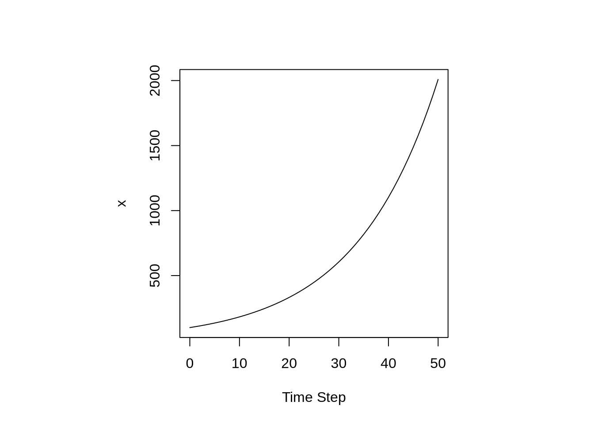
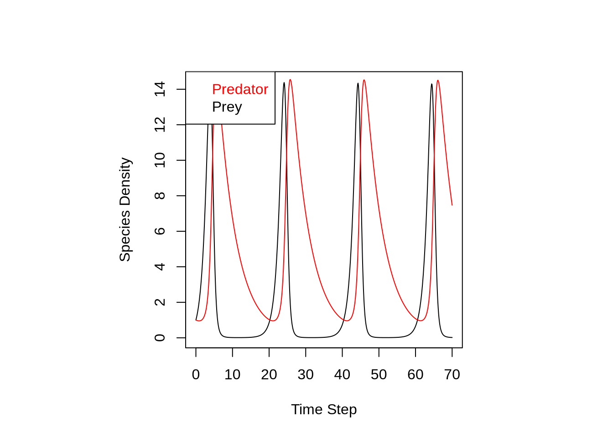
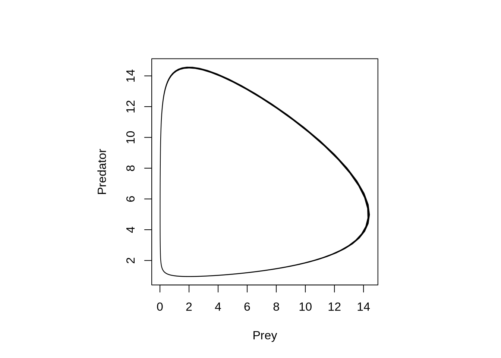

2 Week 2: Understanding Environmental Systems (I)
This tutorial covers the following topics:
- Internal oscillation
- Bifurcation
- Chaotic behavior
- Early warning indicators
Please document all steps of this tutorial in your Tutorial Report
Load the required R packages:
2.1 Internal Oscillation
2.1.1 Savings account
Consider a savings account with an interest rate of 6%. Mathematically, this is expressed as an ordinary differential equation (ODE):
\[ \frac{dx}{dt} = 0.06 x. \] The first term on the left-hand side expresses how \(x\) changes with respect to time \(t\). In other words, \(dx/dt\) is the time derivative of \(x\). Let’s integrate this equation with respect to time:
\[ \frac{1}{x} dx= 0.06 dt \]
\[ \int\frac{1}{x} dx= 0.06 \int dt \]
\[ \ln(x) = 0.06 t + c_1 \] \[ x = \exp(0.06 t + c_1) \]
\[ x = \exp(0.06 t) * \exp(c_1) \]
\[ x = c * \exp(0.06 t) \]
where \(c\) is the integration constant. This is called an analytically integration. Let’s plot \(x\) as a function of \(t\):
# Define function inputs
state <- 100
times <- seq(0, 50, 1) # Time steps
x <- state * exp(0.06 * times)
# Plot output
par(pty = "s")
plot(times, x,
type = "l",
xlab = "Time Step",
ylab = "x")
Some equations are so complicated, that they cannot be integrated analytically. Instead, we can integrate them numerically. Let’s see how we can integrate the same equation numerically using the ode function. Have a look at the code.
Quiz Question 1: Which part of the code defines your initial value?
Run this code in your markdown file:
# Define the function
ode_function <- function(t, state, parameters)
{
with(as.list(c(state)), {
dx <- 0.06 * x
list(c(dx))
})
}
# Define function inputs
state <- c(x = 100) # Initial condition (t = 0)
times <- seq(0, 50, 1) # Time steps
# Run function
out <- as.data.frame(ode(state, times, ode_function))
# Plot output
par(pty = "s")
plot(out$time,
out$x,
type = "l",
xlab = "Time Step",
ylab = "x")
Quiz Question 2: Which part of the code is your ODE?
2.1.2 Lotka-Volterra
Now that you know how to conduct numerical integration, let’s apply your new skills to the Lotka-Volterra model:
\[\frac{dY}{dt} = r_i * Y * (1 - Y / K) - \alpha * R * Y \] \[\frac{dR}{dt} = \alpha * \gamma * R * Y - m * R \]
where \(Y\) = prey, \(R\) = predator, \(\alpha\) = ingestion rate of predator (0.2), \(r_i\) = rate of prey increase (1), \(m\) = mortality rate (0.2), \(\gamma\) = assimilation efficiency (0.5), \(K\) = carrying capacity (10000). Adjust the code from your savings account above to reproduce the Figure below.

Now adjust the code again to plot Predator versus Prey, reproducing the Figure below.

2.2 Bifurcation
The spruce budworm (\(\textit{Choristoneura fumiferana}\)) is an insect pest that consumes the leaves of coniferous trees in North America. In some years, their populations explode and the excessive consumption of pine buds and needles causes massive damage to the trees. The equation below describes the density of the spruce budworm (\(B\)), as a function of density-dependent growth (first term) and predatory mortality (second term):
\[ \frac{dB}{dt} = r_i B \left( 1 - \frac{B}{K}\right) - \beta \frac{B^2}{B^2+k_s^2}\]
where \(t\) is the time, \(r_i\) is the rate of increase, \(K\) is the carrying capacity of the environment, \(\beta\) is the maximum mortality rate, and \(k_s\) is the half-saturation density at which mortality is half of the maximal rate. This is an ordinary differential equation (ODE). Let’s plot the species density (\(B\)) as a function of time (\(t\)). To do that we will integrate the function above with respect to time using the ode function below.
# Define the ODE function
ode_function <- function(t, B, parameters) {
with(as.list(c(parameters, B)), {
dBdt <- ri*B*(1-B/K)-beta*B^2/(B^2+ks^2)
return(list(dBdt))
})
}
# Set parameter values and initial conditions
parameters <- c(ri = 0.05, K = 10, beta = 0.1, ks = 1)
initial_conditions <- c(B = 4)
# Set your time axis
time_points <- seq(0, 1000, by = 1)
# Use the ode function to solve the ODE
solution <- ode(y = initial_conditions, times = time_points, func = ode_function, parms = parameters)
# Plot the solution
par(pty="s")
plot(solution, type = "l", xlab = "Time", ylab = "B", main = NA)Quiz Question 3: Is the system in dynamic equilibrium?
Quiz Question 4: What happens if you increase the rate of increase (\(r_i\)) from 0.05 to 0.08?
- Next, let’s plot the rate of change (\(\frac{dB}{dt}\)) as a function of the population density (\(B\))
# Input values
ri <- 0.05
K <- 10
beta <- 0.1
ks <- 1
B <- seq(0, 10, 0.01)
# Function
dBdt <- ri*B*(1-B/K)-beta*B^2/(B^2+ks^2)
# Plot
par(pty="s")
plot(x = B, y = dBdt, type = "l", xlab = "B", ylab = "dBdt", main = NA)
abline(h = 0, col = "grey")Quiz Question 5: How many equilibrium points are there?
Quiz Question 6: Are they stable or unstable?
- Evaluate your answer by running the code below, trying different values for \(B\) (e.g. 0, 1, 2, 5, 10) (
state <- c(B = 10)). Document your findings.
ri <- 0.05
K <- 10
beta <- 0.1
ks <- 1
rate <- function(t, state, parameters)
{
with(as.list(c(state)), {
ri <- 0.05
K <- 10
beta <- 0.1
ks <- 1
dB <- ri * B * (1 - B / K) - beta * B ^ 2 / (B ^ 2 + ks ^ 2)
list(c(dB))
})
}
state <- c(B = 1)
times <- seq(0, 500, 1)
out <- as.data.frame(ode(state, times, rate))
par(pty = "s")
plot(out$time,
out$B,
type = "l",
xlab = "Time Step",
ylab = "B")- Run the code below to plot the bifurcation diagram
ri <- 0.05
K <- 10
beta <- 0.1
ks <- 1
rate <- function(B, ri = 0.05)
{
ri * B * (1 - B / K) - beta * B ^ 2 / (B ^ 2 + ks ^ 2)
}
equilibrium <- function(ri)
{
Eq <- uniroot.all(f = rate,
interval = c(0, 10),
ri = ri)
for (i in 1:length(Eq))
{
jac <- gradient(f = rate, x = Eq[i], ri = ri)
}
return(list(x = Eq))
}
rseq <- seq(0.01, 0.07, by = 0.0001)
par(pty = "s")
plot(
0,
xlim = range(rseq),
ylim = c(0, 10),
type = "n",
xlab = "ri",
ylab = "B"
)
for (ri in rseq) {
eq <- equilibrium(ri)
points(
rep(ri, length(eq$x)),
eq$x
)
}Quiz Question 7: What does each point on the curve represent?
Assume the initial budworm population is close to zero and \(r_i\) equals 0.05. A small perturbation causes \(B\) to increase.
Quiz Question 8: What will the final population density be after some time?
Quiz Question 9: Next, let’s assume \(r_i\) increases from 0.05 to 0.06. How will this affect the population density \(B\) starting out at an initial population of 1?
2.3 Chaotic behaviour: Lorenz Attractor
The Lorenz equations were the first chaotic system to be discovered. They are three differential equations that were derived to represent idealized behavior of the earth’s atmosphere:
\(\frac{dx}{dt} = -\frac{8}{3}x+yz\)
\(\frac{dy}{dt} = -10 (y - z)\)
\(\frac{dz}{dt} = -xy + 28y-z\)
- Run the code below to visualize the Lorenz Attractor
Lorenz <- function(t, state, parameters)
{
with(as.list(c(state)), {
dx <- -8 / 3 * x + y * z
dy <- -10 * (y - z)
dz <- -x * y + 28 * y - z
list(c(dx, dy, dz))
})
}
state <- c(x = 1.01, y = 1, z = 1)
times <- seq(0, 50, 0.01)
out <- as.data.frame(ode(state, times, Lorenz, 0))
par(pty = "s")
scatterplot3d(
out$x,
out$y,
out$z,
type = "l",
xlab = "X",
ylab = "Y",
zlab = "Z",
grid = FALSE,
box = TRUE,
color = "blue"
)- Record the last \(x\), \(y\), and \(z\) values using
tail(out)
Quiz Question 10: Apply a small change to the initial conditions and rerun the code. How do your changes affect the final \(x\), \(y\), and \(z\) values?
2.4 Early warning signal (EWS) assessments
Let’s see if we can detect a critical transition in the population of fish from a time series using the EWSmethods R package.
set.seed(123) # Set seed to ensure reproducibility
# Load data provided by the EWSmethods package
data("simTransComms")
data <- simTransComms
# Let's look at community 1 only
data <- data$community1
time <- data$time
population <- data$spp_3
data <- data.frame(time, population)
plot(
data$time,
data$population,
type = "l",
xlab = "Time",
ylab = "Population Density"
)
abline(v = 190, col = "red")The Figure above shows a critical transition of the population occurring at time step 190. Let’s see if we can predict this transition by only looking at the data prior to this moment in time. To do this, let’s truncate our data set, excluding all data after 190.
# Truncate data to prior inflection point
data <- subset(data , time < 191.5)
plot(
data$time,
data$population,
type = "l",
xlab = "Time",
ylab = "Population Density"
)Next, apply the Univariate Early Warning Signal Assessment uniEWS
rolling_ews_eg <- uniEWS(
data = data,
metrics = c("ar1", "SD", "skew"),
method = "rolling",
winsize = 50
)
plot(rolling_ews_eg, y_lab = "Density")Quiz Question 11: What does the behavior of the EWS indicators lag1 Autocorrelation (ar1) and Standard deviation (SD) tell you?
Quiz Reflection 1: What are the main things you learned in this tutorial?
Quiz Reflection 2: What concepts are you still struggling to understand?